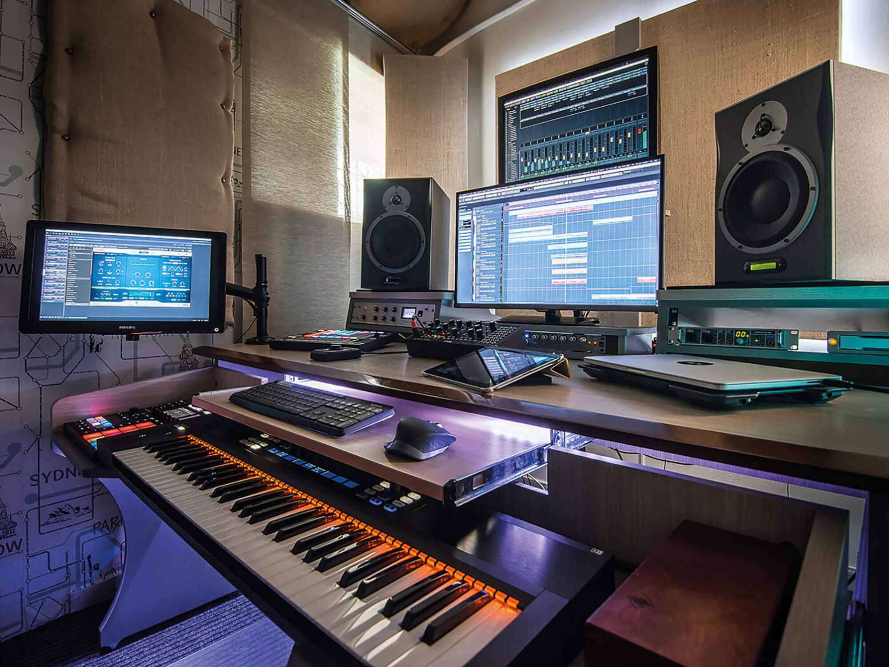

🔔 NEW UPDATES | Join Kellash Studio today and unlock unlimited entertainment, creativity, and opportunities to showcase your talent without limits! 🔔
🎵 Music Production
Industry-level recording, mixing, mastering, and beat production for artists of all styles.

What We Offer
- 🎙️ Vocal recording in a fully-equipped studio
- 🎚️ Mixing and mastering using industry tools
- 🎧 Beat making (trap, bongo flava, afrobeats, etc.)
- 🎵 Voiceovers for ads, podcasts, and more
- 🎛️ Sound design and audio restoration
Why Choose Kellash Studio?
Our team of expert producers and engineers ensure every track sounds clean, balanced, and professional.
Whether you're recording your first song or your next album, we provide the creative and technical support you need.
YOUNG MUSICIANS MAKE A SCENE AT OPEN MIC NIGHT
 An arts project is teaching young musicians skills that could help them start a career in the music industry.
Play Produce Promote (PPP) is an off-shoot of Freshly Greated, which works with young people to develop talent and create a cultural scene in Great Yarmouth, Norfolk.
It held an open mic night at the town's St George's Theatre to help musicians learn they need to do more than create a band, with work required to produce music and promote events to attract audiences.
Programme director Jacqui MacKay said: "I'm 53 years old. If I decided to produce a music night, I don't think many young people would be there, so this is about music by young people, for young people."
An arts project is teaching young musicians skills that could help them start a career in the music industry.
Play Produce Promote (PPP) is an off-shoot of Freshly Greated, which works with young people to develop talent and create a cultural scene in Great Yarmouth, Norfolk.
It held an open mic night at the town's St George's Theatre to help musicians learn they need to do more than create a band, with work required to produce music and promote events to attract audiences.
Programme director Jacqui MacKay said: "I'm 53 years old. If I decided to produce a music night, I don't think many young people would be there, so this is about music by young people, for young people."